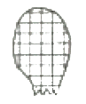

수산양식산업기사 (2006-08-06 기출문제)
1과목: 어류양식
1. 지수의 뱀장어 양식장어 1열의 단위면적당 가장 많은 산소를 공급하는 것은?
- 식물성 플랑크톤의 광합성
- 각종 모기장치에 의한 공기 중의 산소의 강제유입
- 수표면을 통한 공기 중의 산소의 확산유입
- 사육생물의 호흡작용
(정답률: 83%)

2. 실뱀장어가 가장 많이 소상하는 시간대는?
- 간조시 일몰 후 2~3시간
- 만조시 일몰 후 2~3시간
- 조석에 관계없이 야간대
- 조석에 관계없이 주간대
(정답률: 100%)
3. 다음 중 추성(樞星)에 관한 설명으로 맞는 것은?
- 산란기의 잉어 암컷의 복부에 생긴다.
- 산란기의 잉어 수컷의 가슴지느러미에 생긴다.
- 치어기 가물치의 등지느러미에 생긴다.
- 성숙된 초어의 등지느러미에 생긴다.
(정답률: 90%)
4. 탈라피아 양식의 산란습성 및 부화에 관한 설명 중 틀린 것은?
- 탈라피아는 산란기에는 못바닥에 산란구덩이를 파고 산란한다.
- 부화된 치어는 어미의 구강내에서 10~15일간 머무른다.
- 암컷이 수컷보다 성장이 빠르다.
- 성숙기에 달한 암컷은 일반 해수지역에서는 산란이 억제된다.
(정답률: 100%)
5. 은어의 먹이인 윤충류 배양시 사용하면 생존율과 성장에 가장 좋은 효과를 나타내는 것은?
- 해수산클로렐라
- 빵효모
- Moina
- 계란노른다
(정답률: 88%)
6. 무지개송어에 있어서 선별의 목적과 가장 거리가 먼 것은?
- 공식예방
- 성장이 양호
- 급이량의 정확한 계산
- 질병예방
(정답률: 50%)
7. 다음 중 동조법에 해당되는 것은?
- 알을 물속에서 받고 정자늘 짜 넣는 방법
- 물에 알을 넣지 않고 정자를 섞는 방법
- 어류의 체액과 같은 농도의 염분으로 된 링거액에 알과 정자를 섞어서 수정하는 방법
- 알의 양과 물의 양을 같게 해서 수정시키는 방법
(정답률: 91%)
8. 다음 중 잉어 그물 가두리 양식을 위한 적지가 될수 없는 것은?
- 수심 2.5~3m 이하로 비교적 얕은 곳
- 수초(水草)가 많이 번식하지 않은 곳
- 사육관리에 무리가 없는 곳
- 빈영양인 효소
(정답률: 88%)
9. 최근 배양기술 개발로 참돔 자어 사육시 윤충류 이후에 직접 해야해서 사용하는 먹이생물은?
- 이스크yeaste)
- 키그리오푸스(Tigrlopus sp.)
- 클로레라(Chiorella)
- 마이크로시스티스(Microcyutis)
(정답률: 54%)
10. 금붕어 양식의 일반적 사항으로 틀린 것은?
- 산란기의 수컷머리에 추성이 생겨 암수 구별이 용이하다.
- 부화 후 60일이 경과하면 빈수 정도가 채색이 나온다.
- 수조의 환수는 깨끗이 청소하여 일시에 전량 교환한다.
- 시료는 가급적 생사료가 좋고 1일 1회씩 적당량을 준다.
(정답률: 85%)
11. 어류 운반시 계절적으로 저온인 경우가 좋은 가장 근본적인 이유는?
- 먹이가 필요치 않다.
- 배설물 제거가 필요없다.
- 신진대사가 느리다.
- 어병 발생이 적다.
(정답률: 100%)
12. 뱀장어 양식지에서 가장 좋은 물색의 상태는?
- 갈색 또는 황갈색
- 녹색 또는 청록색
- 황록색 또는 유백색
- 암갈색 또는 투명에 가까운 색
(정답률: 84%)
13. 숭어 양식에 대한 사육조건 설명 중 틀린 것은?
- 용수는 수온 조건이 맞는 깨끗한 물을 충분히 쓸수 있어야 한다.
- 용존산소량은 5~7mg/ℓ이며, 적어도 3mg/ℓ 이상인 물이 적당하다.
- 사육수의 수소이온 농도는 6.7~8.6 사이이다.
- 사육수의 수온이 20℃로 수질관리를 잘하면 성장이 빠르다.
(정답률: 60%)
14. 다음 어류 중 혼합 효과가 높은 것은?
- 잉어, 붕어
- 뱀장어, 가물치
- 가외찌붕어, 백련
- 잉어, 백련
(정답률: 74%)
15. 다음 중 일반적으로 넙치 자이 사육에 가장 적당한 수온은?
- 5~10℃
- 11~15℃
- 16~19℃
- 20~25℃
(정답률: 74%)
16. 잉어의 부화 수온 범위가 15~30℃일 때 부화에 소요되는 일수를 기술한 것 중 가장 적합한 것은?
- 15℃일 때 5일, 20℃일 때 3.2일, 30℃일 때 2.1일
- 15℃일 때 6일, 20℃일 때 4.2일, 30℃일 때 2.1일
- 15℃일 때 7일, 20℃일 때 5.2일, 30℃일 때 3.1일
- 15℃일 때 8일, 20℃일 때 6.2일, 30℃일 때 3.1일
(정답률: 93%)
17. 배합사료의 장점과 가장 거리가 먼 것은?
- 관리와 공급이 쉽고 인건비를 절약할 수 있다.
- 평시 상온(20~25℃)에서 2년 이상의 유통기한을 가진다.
- 사료 공급과 가격이 안정적이다.
- 어류의 사료 공급을 적당히 조절함으로써 질병 발생을 줄일 수 있다.
(정답률: 91%)
18. 다음 중 송어의 실제 양식에 있어서 연간 50톤 생산목표로 적지를 신청하려고 할 때, 1분간 필요한 용수량으로 가장 적당한 것은?
- 20,000ℓ
- 30,000ℓ
- 40,000ℓ
- 50,000ℓ
(정답률: 60%)
19. 은어의 생태 습성으로 틀린 것은?
- 맑고 깨끗한 물을 좋아하며, 여름에는 상류에서 성장하다가 가을에는 조금 내려간 중상류쪽에서 산란한다.
- 산란기는 남부에서는 9~10월에 이루어지고 부화적온은 대략 12~20℃이다.
- 은어의 소상은 일몰 후에서부터 일출 전까지 밤에 이루어진다.
- 먹이로 규조류, 녹조류, 남조류 등을 좋아한다.
(정답률: 64%)
20. 미꾸라지의 습성 중 잘못 설명한 것은?
- 계절회유성이 있다.
- 산란전 구매운동이 없다.
- 하면과 동면이 있다.
- 초식성 및 잡식성이다.
(정답률: 74%)
2과목: 무척추동물양식
21. 조개류의 종묘생산 과정 중에 알에서 부화된 유생의 대량폐사가 일어나는 시기를 위험기라고 한다. 다음 중 위험기에 해당되는 시기는?
- 부화직후의 당번자(tlochophore) 유생기
- 당번자 유생에서 피면자(veliger) 유생으로 들어가는 시기
- 각생기 유생기
- 적자 또는 부착기 유생기
(정답률: 71%)
22. 우리나라에서 채묘예보를 5월경에 실시하는 폐류는?
- 참굴
- 가리비
- 피조개
- 진주조개
(정답률: 32%)
23. 먹이생물(규조류)의 배양 속도를 가장 쉽고 정확하게 측정할 수 있는 방법은?
- 비석측정
- 세포수 측정
- 침전부피측정
- 건조중량평량
(정답률: 77%)
24. 우리나라의 남해안에서 피조개의 부유 유생이 주로 나타나는 시기는?
- 3~4월
- 5~6월
- 8~9월
- 10~11월
(정답률: 42%)
25. 양식된 바지락의 모양이 장형이었다면 이것을 양식한 양식장의 환경은?
- 먹이가 부족한 곳
- 환경이 나쁜 곳
- 환경이 좋은 곳
- 저질이 단단한 곳
(정답률: 74%)
26. 남해안산 문어의 성장에 가장 좋은 양성기간은?
- 3~4월
- 5~6월
- 7~8월
- 9~10월
(정답률: 38%)
27. 우렁쉥이에 대한 설명 중 잘못된 것은?
- 피낭에는 투니산이 함유되어 있다.
- 자웅이체이다.
- 부유가 유생은 먹이를 먹지 않는다.
- 변태를 하면 착색은 퇴화한다.
(정답률: 86%)
28. 진주양식에 있어 가장 거리가 먼 사항은?
- 난의 억제작업과 배란작업
- 조개 소제
- 피서(避暑)
- 수술과 정양(靜養)
(정답률: 80%)
29. 다음 부유유생 중 부유기간이 가장 긴 충류는?
- 우렁쉥이
- 피조개
- 전복
- 가리비
(정답률: 93%)
30. 보리새우의 먹이가 되는 brine shrimp는 분류상 어디에 속하는가?
- 갑각류
- 극피동물
- 패류
- 규조류
(정답률: 82%)
31. 경제성을 고려해서 양식할 때 외양성 양초지대로 해조류가 변우하는 곳에 적당한 양식종은?
- 굴
- 전복
- 가리비
- 보리새우
(정답률: 93%)
32. 다음 중 대합(백합) 종묘로 이용하기 위한 가장 좋은 최소 각장의 크기는?
- 3~10mm
- 10~20mm
- 20~30mm
- 30~40mm
(정답률: 65%)
33. 다음 중 호흡공 수가 가장 많은 전복류는?
- 참전복
- 말전복
- 까막전복
- 오분자기
(정답률: 90%)
34. 꽃게가 먹이를 거의 먹지 않는 수온의 기준은?
- 20℃
- 15℃
- 10℃
- 7℃
(정답률: 50%)
35. 다음 중 생식소에 식염을 섞은 후 알코올을 섞어 가공해서 운단을 만드는데 이용되는 것은?
- 소라
- 전복
- 성게
- 해삼
(정답률: 64%)
36. 윤충(로티퍼) 1마리가 하루에 먹는 클로렐라 양으로 가장 적합한 것은?
- 5만~10만 세포
- 10만~15만 세포
- 15만~20만 세포
- 20만~30만 세포
(정답률: 77%)
37. 참굴 양식시 풍파가 강한 곳에 적합한 양성시설은?
- 뗏목 수하식
- 원통형 로프 수하식
- 양목 수하식
- 무산형 수하식
(정답률: 92%)
38. 전복의 바이러스성 질병 중 외투막과 상족의 위축 및 패각 주변부의 붕괴 증상이 나타나는 것은?
- 난균증
- 소화관 확장증
- 화농성 질병
- 전복치패 근육 위축증
(정답률: 64%)
39. 다음 중 조위망식 양성법으로서 주로 양성하는 종류는?
- 전복
- 문어
- 대합
- 성게
(정답률: 79%)
40. 해상은 여름철에 수온이 높아지면 하면을 한다. 하면하는 동안에 나타나는 가장 뚜렷한 현상은?
- 서식장의 이동
- 소화관의 퇴화
- 생식소의 발달
- 재생능력의 강화
(정답률: 75%)
3과목: 해조류양식
41. 강의 색소에서 붉은 색을 나타내는 것은?
- Chlorophyll
- Carotlnold
- Phyceerythrin
- Phycocyanin
(정답률: 63%)
42. 다음 중 김의 종묘생산에서 유리사상체의 배양시 가장 좋은 조건은?
- 수온 18~25℃, 일조시간 13~14시간/1일
- 수온 15~20℃, 일조시간 8~10시간/1일
- 수온 18~25℃, 일조시간 8~10시간/1일
- 수온 15~20℃, 일조시간 13~14시간/1일
(정답률: 50%)
43. 김 재묘작업이 끝난 후 발을 발아층으로 올리는 것에 관한 설명 중 틀린 것은?
- 발아층은 4~5시간 노출선으로 하는 것이 일반적이다.
- 발올리기 시기를 늦추면 해적생물이 붙을 염려가 있다.
- 해적생물이 많은 곳인 3일 후, 그렇지 않은 곳은 5~7일 후에 올려준다.
- 이 때 해적생물은 주로 따개비, 굴 등 부착패류이다/
(정답률: 알수없음)
44. 김어장에서 해수시비법(海水施肥法)의 장점은?
- 조류에 의한 비료분의 손실이 크다.
- 효과범위가 그다지 뚜렷하지 않다.
- 각 어장마다 시비의 기준이 다르다.
- 시비에 노력이 적게 든다.
(정답률: 84%)
45. 다음 중 공장폐수 등의 영향이 있는 곳에서 많이 나타나고 이 병으로 수확감소와 품질저하가 생기는 갯병은?
- 염증병
- 흰갯병
- 쪼그랑병
- 붉은 갯병
(정답률: 73%)
46. 여름철에 다시마 종묘를 억제배양할 때 수조의 최대 온도 기준은?
- 26℃
- 23℃
- 20℃
- 18℃
(정답률: 69%)
47. 다음 중 각포자 방출 촉진법은?
- 100% 습도처리
- 고비중처리
- 연속염기처리
- 저온처리
(정답률: 31%)
48. 다음 그림은 무엇을 나타내는가?

- 김의 각포자의 발아체
- 다시마의 하포체
- 톳의 배(配)
- 청각의 발아체
(정답률: 67%)
49. 미역의 채묘에서 씨줄은 배양해수 톤 당 몇 m 정도로 하는가?
- 25~30m
- 250~300m
- 2,500~3,000m
- 25,000~30,000m
(정답률: 64%)
50. 냉장발은 싹의 크기와 부착상태에 따라서 냉장시기와 설치시기가 달라진다. 다음 중 틀린 사항은?
- 5mm 이하의 어린 싹은 적응성이 좋다.
- 30~50mm 큰 싹은 채취가 빠르다.
- 싹이 큰 것은 병든 것이 섞일 염려가 있다.
- 싹이 크고 성긴 것은 만기산에 적합하다.
(정답률: 62%)
51. 감자성제의 닭살병의 주된 원인은?
- 배수 중의 영양영 부족
- 탄산칼슘의 침착
- 호염성 세균감염
- 규조류의 부착
(정답률: 70%)
52. 1월 중에 김을 채취한 다음에 김발의 높이는?
- 이전보다 높인다.
- 이전보다 낮춘다
- 발높이를 바꾸지 않는다.
- 소조와 대조에 맞추어서 조절해야 한다.
(정답률: 알수없음)
53. 톳의 생활사를 설명한 것 중 틀린 것은?
- 배우제 세대며, 암수이주의 다년성이다.
- 겨울철에 성장을 하여 3~4월이 성체가 된다.
- 조제는 여러 줄기를 갖는다.
- 5~6월에 성숙하여 알과 정자를 배출한다.
(정답률: 40%)
54. 마른 김의 제조과정을 올바른 순서대로 나열한 것은?
- 양식김 - 현탁 - 세단 - 김뜯기 - 초제 - 건조 - 김떼기 - 마른김
- 양식김 - 김뜯기 - 세단 - 현탁 - 초제 - 건조 - 김떼기 - 마른김
- 양식김 - 김뜯기 - 현탁 - 세단 - 초제 - 건조 - 김떼기 - 마른김
- 양식김 - 현탁 - 김뜯기 - 세단 - 초제 - 건조 - 김떼기 - 마른김
(정답률: 60%)
55. 김의 병해에서 점액성인 Leuucothrix-mucer에 의하여 발병하는 것은?
- 호상균
- 녹반병
- 붉은갯병
- 사상제균부착종
(정답률: 54%)
56. 초파리의 배우자는 어느 추광성을 갖는가?
- +주광성
- -주광성
- ±주광성
- 주광성이 없다.
(정답률: 75%)
57. 남방형 미역의 특징이 아닌 것은?
- 포자엽의 주름수가 6~20개로 많다.
- 채장과 포자엽이 있는 줄기가 짧다.
- 잎의 열각이 얕고, 열핀수가 채장에 비해 많다.
- 조류가 빠르지 않은 채주와 남해안에 많이 분포한다.
(정답률: 65%)
58. 미역 종사의 채묘장소로서 가장 적당한 것은?
- 가능한한 밝은 그늘 장소
- 햇빛이 비치는 창쪽
- 어두운 장소
- 완전 빛이 차단된 장소
(정답률: 59%)
59. 다음 중 김양식에 적당한 해수의 유속은?
- 20cm/sec 이상
- 15~16cm/sec
- 10~15cm/sec
- 5cm/sec 이하
(정답률: 63%)
60. 출파래의 접합자판에 착상한 규조류를 구제하는 가장 좋은 방법은?
- 며칠간 직사광선을 차단한다.
- 하루에 5~6시간씩 며칠간 노출시킨다.
- 하루에 1~2시간씩 며칠간 노출시킨다.
- 조도를 낮춘다.
(정답률: 54%)
4과목: 수산생물
61. 다음 중 동물 분류학상 태형동물군(Bryozoa)에 속하는 종류는?
- 브리키오누스(Brachioma)
- 꽃다말이끼벌레류(Bagula)
- 개맛(tingufa)
- 우렁쉥이(Haiocynyhia)
(정답률: 75%)
62. 바닷말류의 주된 영양소 흡수기관은?
- 뿌리
- 줄기
- 몸표면 전체
- 뿌리와 줄기
(정답률: 82%)
63. 다음 중 뱀장어에서 볼수 없는 지느러미는?
- 등지느러미
- 꼬리지느러미
- 배지느러미
- 가슴지느러미
(정답률: 74%)
64. 난방중 전복의 겨울철 서식한계 수온은?
- 8℃
- 10℃
- 12℃
- 14℃
(정답률: 46%)
65. 적조생물 중 유독물질은 내어 가장 큰 피해를 주는 것은?
- 와판모조류
- 규조류
- 요각류
- 여광충
(정답률: 79%)
66. 다음 종류 중 창자호흡을 하는 것은?
- 미꾸라지
- 보리새우
- 닭새우
- 해마
(정답률: 70%)
67. 어류의 몸 옆면에 세로로 뻗어 있는 옆줄의 기능은?
- 압력, 촉감 등의 감각작용을 담당한다.
- 소화작용을 담당한다.
- 시각작용을 담당한다.
- 배설작용을 담당한다.
(정답률: 86%)
68. 다음 중 난태생어에 해당하는 것은?
- 맘상어
- 잉어
- 연어
- 멸치
(정답률: 82%)
69. 아우리클라리아(Auricularia) 유생기를 거치는 것은?
- 불가사리류
- 해삼류
- 성게류
- 우렁쉥이류
(정답률: 64%)
70. 강장동물의 특징 중 틀린 것은?
- Potyp형과 Mecusa형이 기본형이다.
- 소화기, 순환기, 배설기가 잘 발달되어 있다.
- 대부분 암수 딴몸이나 무성생식과 새대교반을 하는 종류도 있다.
- 주로 해산이나 담수에 서식하는 것도 있다.
(정답률: 58%)
71. 원양성 해저퇴적물 중 생물기원 퇴적물로서 가장 큰 비중을 차지하는 것은?
- 역족류 연니
- 방산충 연니
- 유공충 연니
- 요각류 연니
(정답률: 59%)
72. 삼어류를 형태상 구분하고자 할 때 그 기준으로 옳지 않은 것은?
- 뒷지느러미
- 아가미의 구멍수
- 이빨
- 호흡방법
(정답률: 65%)
73. 대형 플랑크톤(Macroplankton)의 크기는?
- 2~20μm
- 20~200μm
- 0.2~20mm
- 2~20cm
(정답률: 74%)
74. 동물플랑크톤 중 제일 많이 분포하는 종류는?
- Chmalignata
- Copepoda
- Euphausiacea
- Mysidacea
(정답률: 70%)
75. 다음 중 체형이 전혀 다른 어류는?
- 참돔
- 전어
- 방어
- 망상어
(정답률: 43%)
76. 다음 극피동물의 특징 중 틀린 것은?
- 전부 해산(海産)이다.
- 몸은 5방대칭이다.
- 대부분 암수 한몸이다.
- 수관계를 가지며 관촉이 있다.
(정답률: 59%)
77. 해초식물 중에서 톳은 어디에 속하는가?
- 녹조식물
- 홍조식물
- 갈조식물
- 남조식물
(정답률: 58%)
78. 김 양식에 있어 서식대가 겹쳐 피해를 주는 해조류는?
- 파래류
- 미역류
- 톳류
- 청각류
(정답률: 74%)
79. 해양 생태계에서 환원지에 속하는 것은?
- 해조류
- 박테리아
- 식물성 플랑크톤
- 동물성 플랑크톤
(정답률: 75%)
80. 식물플랑크톤에 대한 내용 중 틀린 것은?
- 규조류나 편모조류 등이 주체를 이루고 있다.
- 유글레나처럼 엽록소는 가지고 있지만 광합성은 하지 않는다.
- 투명도가 높은 외양에서는 수심 100m까지 살고 있다.
- 몸이 침역이나 한천질에 싸여 있어 자체 비중을 가볍게 한다.
(정답률: 78%)
5과목: 수질분석 및 양식생물
81. 시료수의 운반과 보존 중 특히 5℃이하의 냉암소에 보존하야야 하는 분석 대상 항목은?
- CO
- COD
- BOD
- pH
(정답률: 75%)
82. 닻벌레의 변태과정 중 어채 표면에서 기생하는 시기는?
- Nauplius
- Meta Nauplius
- Copepodid
- Zoea
(정답률: 75%)
83. 시약보관 시 주의사항으로 잘못된 것은?
- 고체시약은 습기나 먼지가 들어가지 않는 곳에 보관해야 한다.
- 산 종류는 일반적으로 휘발성이 있고 인체에도 해로우므로 산실에 저장한다.
- 가성알칼리 시약병의 마개는 고무마개 대신 유리마개로 보관한다.
- 마개가 코르크인 경우 셀로판지로 마개를 싸서 막아준다.
(정답률: 85%)
84. Bucephalus 중이 굴의 생식소에 기생할 때 생식소는 어떤 색을 보이는가?
- 유벽색
- 검은색
- 노랑색
- 자주색
(정답률: 67%)
85. pH 측정용 전극의 취급법으로 옳은 것은?
- 유리전극은 깨끗이 닦아 말려서 보관한다.
- 전극질에 오물이 묻었을 경우는 유기선이나 무수알콜로 씻는다.
- 보관시에는 증류수나 완충액에 액침한다.
- 보조전극의 전해액 주입구별은 전해액 주입시에만 연다.
(정답률: 80%)
86. 시료병 재료로서 가장 좋은 것은?
- 플라스틱이나 연질유리
- 폴리메틸렌이나 경질유리
- 플라스틱이나 아크릴수지
- 부식 또는 녹슬지 않는 금속
(정답률: 65%)
87. 통풍이 불량한 곳이나 습기가 많은 곳에 시료를 보관하면 곰팡이가 자라는데 이것이 원인이 되어 생기는 병은?
- 간종암
- 궤양병
- 등이염병
- 척추인곡증
(정답률: 62%)
88. 잉어에 감염된 솔방울병에 대한 설명 중 옳은 것은?
- 유수지에서 발병율이 높다.
- 급격한 수온 중가시에 발병율이 높다.
- 전신에 증세가 나타난 후 1주일 정도 지나면 죽기 시작한다.
- 복부가 팽만하며 안구는 함입된다.
(정답률: 75%)
89. 표면수온 측정에서 오차를 일으키는 원인으로 볼 수 없는 것은?
- 온도계의 기차
- 관측용 채수통의 예비열
- 온도계 표면의 가화열
- 기온
(정답률: 65%)
90. 시간의 경과에 따라 변하기 쉬운 성분에 대한 취급법으로서 가장 맞는 것은?
- 냉암소 보존
- 급냉처리
- 미생물 활동 억제재 첨가
- 즉시 분석
(정답률: 80%)
91. 각각 시험을 하기 위해 혼합한 시료 중에서 분리하여 취한 물을 무엇이라 하는가?
- 시료
- 시수
- 검수
- 검역
(정답률: 79%)
92. 방어에 피부흡충이 기생하면 5~6일 만에 2차적인 원인으로 죽게 된다. 어떤 원인인가?
- 빈혈증으로 죽게 된다.
- 여위어서 죽게 된다.
- 영양실조로 죽게 된다.
- 비브리오균의 감염으로 죽게 된다.
(정답률: 59%)
93. 해수에서 염소량으로부터 총 염분량을 계산하는 식은?
- S %(염분량) = 0.80655 × Cl %(염소량)
- S %(염분량) = 1.80655 × Cl %(염소량)
- S %(염분량) = 0.03 × Cl %(염소량)
- S %(염분량) = 1.03 × Cl %(염소량)
(정답률: 74%)
94. 송어의 복부가 부풀어 오르고 천천히 헤염치는 것이 있어 해부하여 보니 위가 심하게 확장되고 있고, 위속에 회갈색의 액체와 기포가 많이 들어있었다면 그 원인으로 생각되는 것은?
- Saplolegnla sp.
- Candidia sp.
- Branchioeyces sp.
- Dermovystitm sp.
(정답률: 75%)
95. 혐기성 박테리아나 원생동물의 역할로 분해되어 발생하는 생성물로 가장 거리가 먼 것은?
- H2S
- CH4
- NH3
- NO3
(정답률: 86%)
96. 체내에 투입되어 특정한 질병 원인체에 대항하는 항체를 체내에 생성시켜 특정질병에 감염되는 것을 예방할 목적으로 사용되어지는 생물학적 제제는?
- 합성항균제
- 항생물질
- 푸란제
- 백신제
(정답률: 84%)
97. 다음 중 현지측정 항목이 아닌 것은?
- 수온, 기온
- 수색, 외관
- 투시도, 전기전도도
- 염소이온, 알칼리도
(정답률: 85%)
98. 은어의 아피노마이세스병에 대한 설명으로 적합하지 않은 것은?
- 원인이 되는 진균은 체표의 상처를 통하여 침입되어 진다.
- 환부내의 균사체는 격벽이 없으며 부정형으로 분자되어있다.
- 감염병소는 번식성염이 생긴 후 육아중성염으로 나타난다.
- 주요 발병 시기는 수온이 15도 이하인 겨울철이다.
(정답률: 53%)
99. 포자충류의 발생을 막는 가장 적당한 예방책은?
- 수온을 상승시킨다.
- 옷의 소독을 충분히 한다.
- 후란제를 경구투여 한다.
- 물의 유통을 막는다.
(정답률: 53%)
100. 뱀장어에 유행하는 Edward 병의 유행시기는?
- 봄
- 가을
- 여름
- 겨울
(정답률: 69%)